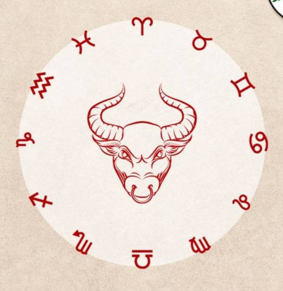
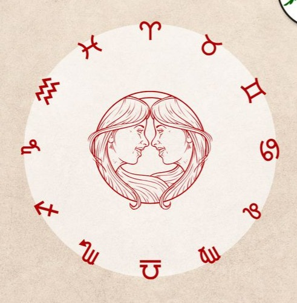
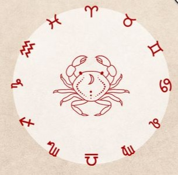
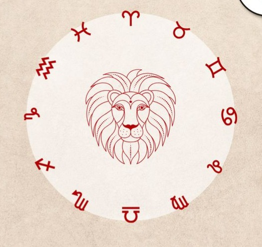
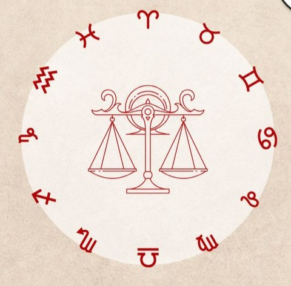
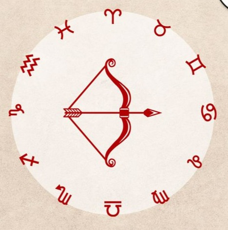
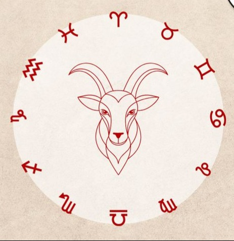
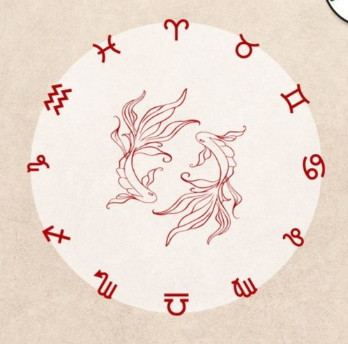

Gökyüzünün fısıltılarına kulak ver...
Yıldızların Diline Hoşgeldiniz ✨
Burçların ve gökyüzünün sembolik dilini keşfetmek için buradasın. Aşağıda burçları inceleyebilir ve kendi Güneş burcunu hesaplayabilirsin.

Burçlar
Aşağıdaki burç kartlarına tıklayarak her burcun detay sayfasına gidebilirsin.

Koç
21 Mart - 19 Nisan
Ateş

Boğa
20 Nisan - 20 Mayıs
Toprak

İkizler
21 Mayıs - 21 Haziran
Hava

Yengeç
22 Haziran - 22 Temmuz
Su

Aslan
23 Temmuz - 22 Ağustos
Ateş

Başak
23 Ağustos - 22 Eylül
Toprak

Terazi
23 Eylül - 22 Ekim
Hava

Akrep
23 Ekim - 21 Kasım
Su

Yay
22 Kasım - 21 Aralık
Ateş

Oğlak
22 Aralık - 19 Ocak
Toprak

Kova
20 Ocak - 18 Şubat
Hava

Balık
19 Şubat - 20 Mart
Su
Burcunu Hesapla
Doğduğun gün ve ayı gir, hangi burç olduğunu hemen öğren.
Not: Bu hesaplama sadece Güneş burcunu verir. Yükselen burç için doğum saati ve konumu gerekir.